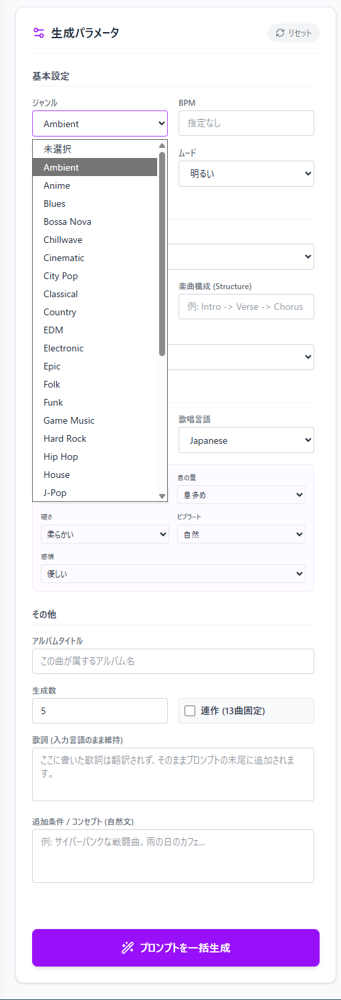
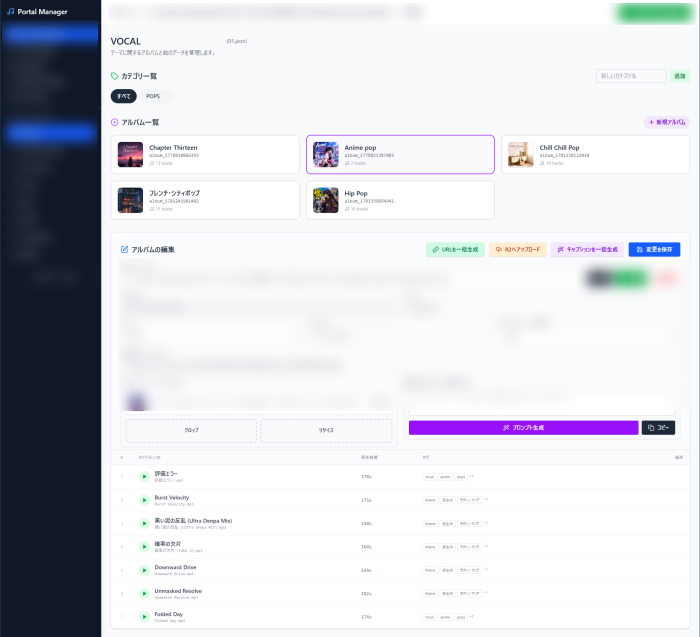

Neuro Music Archive (NMA) の楽曲生成・配信を支える自動化ワークフロー
Neura Music Archive（NMA）で公開している楽曲は、プロンプトの作成からメタデータ管理、サイトへのデプロイに至るまで、自作の専用デスクトップアプリ「Portal Manager」を用いてプロセスを自動化しています。
AIを用いた音楽生成においては、生成そのものよりも「大量の出力結果の整理・メタデータ付与・公開作業」に多くの運用コストがかかります。本記事では、手作業を極限まで削減するために構築した、独自のフルオートメーション・ワークフローを解説します。
Pipeline Architecture
Gemma 4 (Local)
Rust Backend / JSON
コンテキスト維持
Cloudflare R2 / Git
01. ローカルLLMによるプロンプトの一括生成
楽曲制作の始点は、アプリ内の「Prompt Builder」によるプロンプト設計です。ジャンル、BPM、ムード、バンド編成に加え、ボーカルの声質（息の量、硬さ、ビブラートなど）をパラメータとして指定します。
生成を実行すると、バックグラウンドで稼働するローカルLLM（Gemma 4）が起動し、音楽生成モデル（Lyria 3）向けに最適化された英語プロンプトを指定曲数分、自動生成します。コンセプトアルバムを作成する場合、「Overture」から「Epilogue」までの起承転結を意識した13曲分のコンテキストを維持したまま、一括でプロンプト群を出力する仕組みとしています。

02. 楽曲のインジェストとメタデータの自動バインディング
音楽生成モデルから出力された楽曲ファイルをローカルフォルダに保存し、「Theme Workspace」画面で読み込みます。
ここではRust製のバックエンドがディレクトリを高速スキャンし、生成済みのプロンプト履歴とオーディオファイルを照合します。これにより、プロンプト生成時に指定したタグ情報や歌詞データが、各楽曲のメタデータ（JSONおよびID3タグ）として自動的に紐付けられます。手動でのタグ打ちやテキストのコピペは不要です。

ファイルI/Oの高速化と安全性を考慮し、インジェストエンジンの基盤にはRust（Tauriのバックエンド側コマンド）を採用。数GB単位のオーディオ一括スキャンもミリ秒単位で完了します。
03. LLMを用いたタイトル・キャプション生成と全体最適化 (Refine)
楽曲のタイトルと解説文（キャプション）の付与も、ローカルLLMのパイプラインに組み込んでいます。
単曲ごとにパラメータや歌詞の文脈からテキストを生成するだけでなく、特筆すべきはアルバム全体の自己修正（Refine）プロセスです。AIがアルバム全曲の生成結果を俯瞰し、「語彙の重複がないか」「アルバムとしての統一感があるか」を自ら評価・再構築することで、バッチ処理特有の質の低下を防いでいます。
また、これらの情報をもとに、カバーアート用の画像生成プロンプトも自動抽出され、画像クロップから設定までアプリ内で完結します。
04. Cloudflare R2への直接デプロイとサイト更新
データの準備が完了した後の公開プロセスも、GUI上のワンクリックで完結します。
アプリ内からデプロイを実行すると、オーディオファイルと画像ファイルが Cloudflare R2 ストレージへ直接アップロードされます。同時に、公開用のCDN URLが自動生成されてローカルのJSONデータに上書きされます。
最後にヘッダーの「Git Push (Deploy)」を実行すれば、最新の manifest.json とテーマファイル群がリポジトリに反映され、NMAの静的サイト上に新しいアルバムが即座に公開されます。
このように、NMAでは単なるAIによる楽曲生成に留まらず、その周辺に発生する煩雑な運用タスク全体を、ローカルAIとTauriアプリের連携によって効率化しています。運用フローの自動化に興味がある方の参考になれば幸いです。